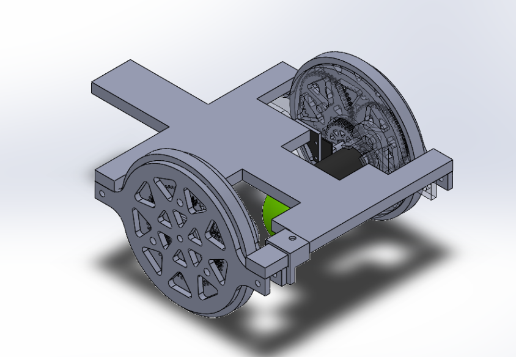
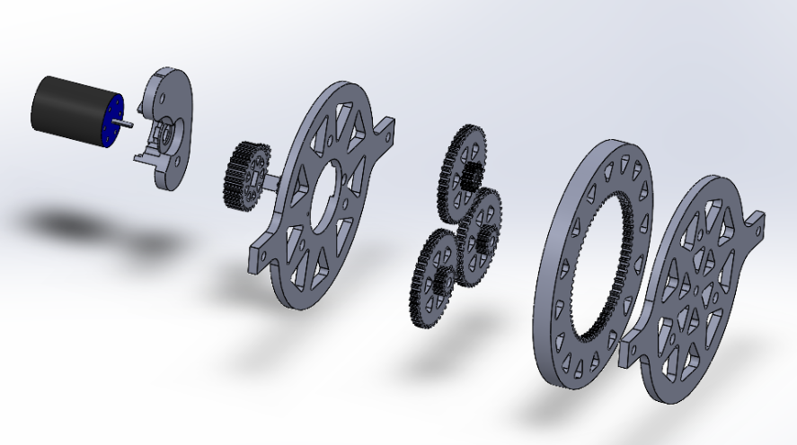

Gaggiuino and Topology Optimization

Instead of a final exam, the professor created a challenge for the class where there was an opportunity to get bonus points. The challenge is to create an autonomous robot that would find its way through a maze while collecting balls within the maze. This was done as ME 545 is the graduate mechatronics class. The robot must collect at least 3 balls with more increasing your score, the best score can be earned if the robot makes it through the maze the fastest while collecting the most balls. There is also a pink ball that counts as a bonus. We would work in teams of 3 or 4 that can be self-chosen. The professor also gave us a budget of 300 USD to purchase parts to build the robot and test with. My team and I ended up winning the competition with the fastest time the professor has seen and we got all the tennis balls.
To begin this proejct, we decided to forgo any type of active sensing method to find the tennis balls as we believed it would add too much complexity to the robot. Our goal for our robot was to focus on getting a really good wall-following robot that went quickly and we would just passively collect the balls. To do this we decided to build the robot with BLDC motors and using lipo batteries. We decided to go with that as BLDC motors can produce a ton of power and the lipo batteries had the best power density. The main issue we found with going with this method is that we couldn't drive them at a slow speed well. This was mainly because we made a mistake in ordering the wrong type of motors, we bought highspeed motors so they didn't have very good low-end torque.The method that the ESC, that came with the motors, used to commutate the motors caused the motor to get stuck between two coils. We as a team then tried two methods to solve the driving at slow speed problem, one being FOC motor control and the second being a planetary gear set (both methods can be seen below). Unfortunately, both didn't pan out as we didn't have enough time to fully develop them and had to axe using the BLDC motors, so we would have enough time to build and test a robot. We pivoted to using brushed DC motors. 
Once we pivioted to using brushed DC motors we then put most of our energy into refining our wall following alglothim. To sense the wall we decided on using IR sensors, as we all had the most experience using them and they were the simplest method to dectect the wall. We went with using two, one focused forward to dectect upcomming walls while the the other one would focus on the wall to the side of the robot. To collect the balls we went with just using a large peice of Velcro, as we found that using this work much better than expected. One of our tests can be seen below.

Gaggiuino and Topology Optimization

Refitting the IVSG Mapping Van

Forged Carbon Fiber Shift Knob
Serious collaboration or work inquiries only.